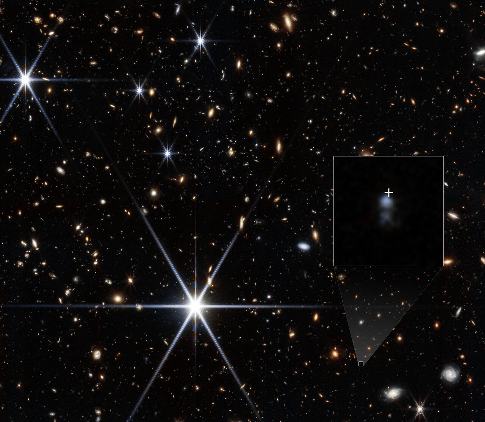

발견
우주 나이 30억 살 때의 섬광, 그 고향이 보였다

NASA·ESA에 따르면 웹 망원경은 지금까지 위치가 확정된 FRB 가운데 가장 먼 FRB 20240304B의 고향(모은하)을 찾아냈다. 적색편이는 2.148로, 빅뱅 후 약 30억 년 시점이다.
연구진은 크고 별이 많은 은하를 예상했다. 실제로 찾은 것은 예상보다 약 1,000배 가벼운, 별을 활발히 만들고 있는 작은 왜소은하였다. 연구진은 이 결과가 중성자별 병합보다 갓 태어난 마그네타 쪽의 기원을 지지한다고 봤다. 시드니대의 마니샤 칼렙(Manisha Caleb)이 제1저자로, 28명이 참여한 논문이 10월 8일 Science에 온라인 게재됐다.
- 논문"A fast radio burst at redshift 2, three billion years after the Big Bang"
- 학술지Science · 논문번호 eadz2675 · 권·호는 아직 미배정
- 게재2026년 10월 8일 온라인 게재 = NASA·ESA·맨체스터대 보도자료 배포일
- DOI10.1126/science.adz2675
- 선공개2025년 8월 arXiv 프리프린트(2508.01648)로 먼저 공개 → 동료심사 거쳐 정식 게재
🔭 알고 보면 달라지는 것
ESA/Webb 보도자료 논문(Science, DOI)
적색편이 2.148·빅뱅 후 약 30억 년·"약 1,000배 가벼운" 왜소은하·마그네타 기원 지지는 ESA/Webb(weic2621, 2026-10-08)·NASA 보도자료(2026-10-08) 일치(NASA 보도자료에도 같은 내용 — 링크는 카드⑤·⑦) · 논문 제목·온라인 게재일·논문번호·저자 수는 Crossref 서지 레코드(DOI 10.1126/science.adz2675)로 확인 — science.org 본문은 열지 못했다 · 프리프린트 번호·공개 시기는 arXiv 전문 확인 · 이미지 크레디트는 esawebb.org/images/weic2621a 페이지 Credit 원문 그대로 (확인 2026-10-11)
'가장 먼 FRB'라는 말에는 단서가 붙는다. 정확히는 어느 은하에서 왔는지까지 확정된(localized) FRB 중의 기록이다. FRB는 하늘 곳곳에서 잡히지만, 고향 은하를 짚어 거리를 잰 경우는 훨씬 적다.
또 하나, 두 배가 된 것은 적색편이다(프리프린트 표현 "doubles the redshift reach"). 빛이 날아온 시간으로 따지면 직전 기록의 80억 년보다 길어졌지만 두 배는 아니다. "거리가 두 배"로 읽으면 안 되는 이유다.